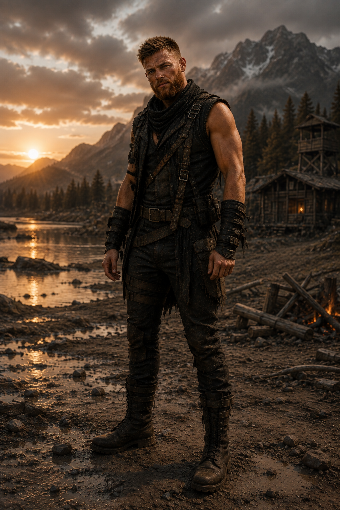
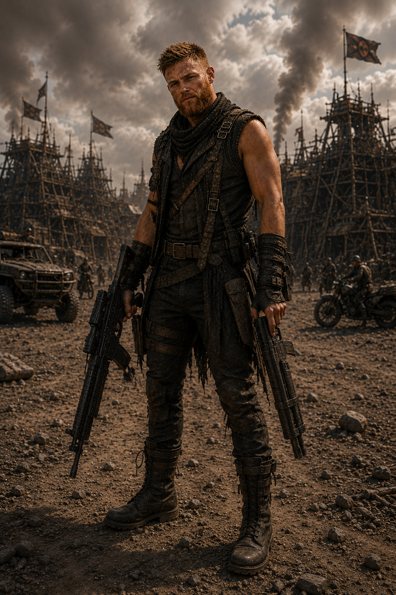

Dois herdeiros.
Uma frente.
Os arquivos preservam Nathan individualmente e ao lado de Pollyana no mesmo território. O restante de sua história aguarda novos registros e autorização do autor.



Seu registro individual foi recuperado no território depois do Dia D. As imagens confirmam sua sobrevivência, mas nenhuma função será atribuída antes da lore oficial.
Os arquivos preservam Nathan individualmente e ao lado de Pollyana no mesmo território. O restante de sua história aguarda novos registros e autorização do autor.
